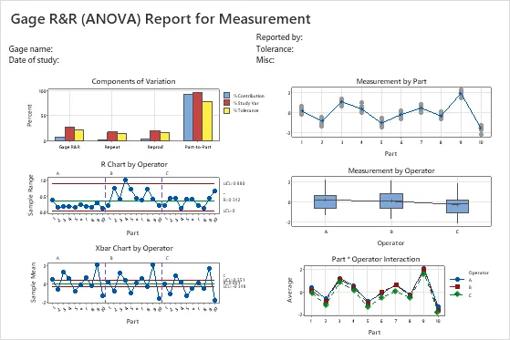
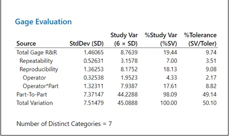
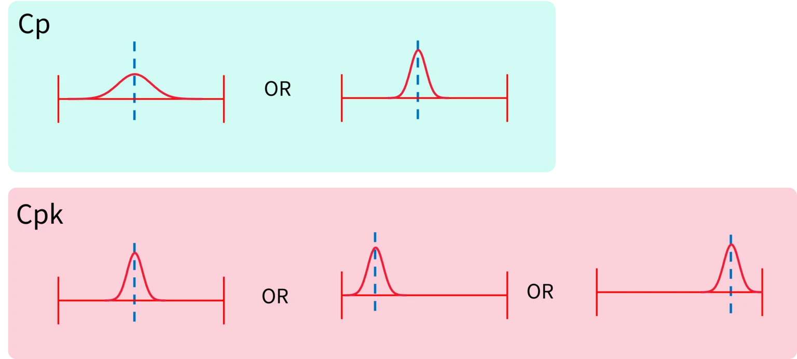
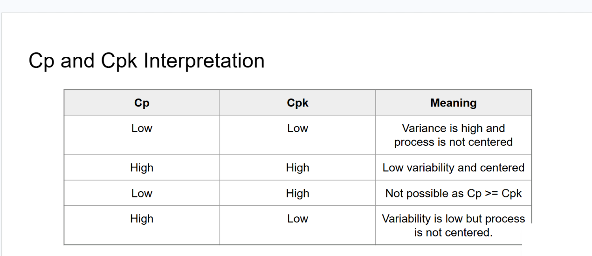

Energy Source
GEN11 Generator
Supplies bipolar energy and audible feedback during sealing.
This is a completely fictional, educational Six Sigma scenario created for my portfolio. I use the ENSEAL X1 product name only because I am familiar with the type of device and its publicly available information. The complaint trend, manufacturing setting, dimensional issue, root-cause conclusion, data, and any future analysis are invented. This project is not advertising, does not represent the actual performance of the product, and does not disclose confidential or proprietary information from Ethicon, Johnson & Johnson, or any other organization.
For this fictional project, I am working with the ENSEAL X1 Large Jaw Tissue Sealer, an advanced bipolar electrosurgical instrument designed for open surgical procedures. The device allows a clinician to grasp and dissect soft tissue, apply bipolar energy to seal vessels and tissue bundles, and then mechanically transect the sealed tissue using a knife that advances along the jaws.
According to the public instructions for use, the sterile, single-patient-use device is intended to coagulate and transect vessels up to and including 7 mm in diameter, as well as tissue and vascular bundles. The jaws hold the target tissue, the seal control delivers bipolar energy, and the separate cut control advances the knife to the cut line. The intended outcome is a controlled vessel seal followed by a complete tissue transection during open surgery.
Official Product Source ↗

Supplies bipolar energy and audible feedback during sealing.
Grasps, seals, and mechanically transects the target tissue.
Connect the attached power cord to the GEN11 generator and power on the system.
Rotate the shaft as needed and center the target vessel or tissue within the jaws.
Squeeze the closing handle until it latches, securing the tissue between the jaws.
Press the SEAL button or MIN foot pedal. The generator delivers bipolar energy and sounds an end tone when the cycle is complete.
After the end tone, fully press the CUT button so the knife advances along the jaws to the cut line.
After transection, squeeze the closing handle until it unlocks, then release the tissue.
Simplified educational workflow based on the public instructions for use. It is not a substitute for device training or the complete IFU.
“To investigate incomplete tissue cuts due to suspected inconsistencies in knife length.”
Before studying the knife-length manufacturing process, I need to determine whether the measurement system itself is accurate and reliable. An MSA separates variation caused by the instrument and operators from actual differences among the knives, ensuring that later process-capability conclusions are based on trustworthy measurements.
The graphical output and numerical Gage Evaluation below show how I would interpret the MSA results.

The R chart shows the range of repeated measurements, and most points remain below the UCL, indicating consistent repeatability across operators. One point near the A/B boundary should be checked for a part, technique, or data-entry issue.
Unlike a normal control chart, points outside the narrow X̄ limits are desirable because they show that the gage can distinguish among parts. Here, many points fall outside the limits and the operators follow similar patterns, indicating good discrimination.
The Components of Variation chart compares Gage R&R, repeatability, reproducibility, and part-to-part variation. The dominant Part-to-Part bars show that real differences among samples outweigh measurement-system variation.
The lines follow similar shapes and remain fairly close, showing general agreement. Small separations suggest some operator bias that a standardized method could reduce.
Total Gage R&R is 19.44%, which falls within the 10–30% conditionally acceptable range. The system may be used when its intended application and limitations are documented.
Risk-based caveat: For safety-critical final acceptance, I would first reduce the operator-related variation and confirm the improvement with another MSA.

After confirming that the measurement system is suitable, I would use the validated knife-length data to determine whether the manufacturing process can consistently produce knives within the defined specification limits.

Cp compares the spread of the process data with the distance between the upper and lower specification limits. A larger ratio is better because it means the process spread, represented by 6σ, is smaller relative to the available specification range.
Formula: Cp = (USL − LSL) / 6σ
Cpk evaluates both the spread and centering of the process data. It measures the distance from the process mean to both the USL and LSL, then uses whichever standardized distance is smaller because that is the specification limit the process is closest to.
Formula: Cpk = min[(USL − μ) / 3σ, (μ − LSL) / 3σ]
USL is the upper specification limit, LSL is the lower specification limit, μ is the process mean, and σ is the process standard deviation.

I would assess the calculated capability value using the following ranges: